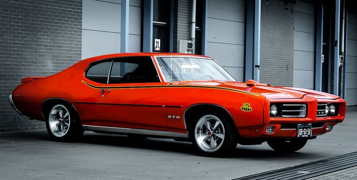
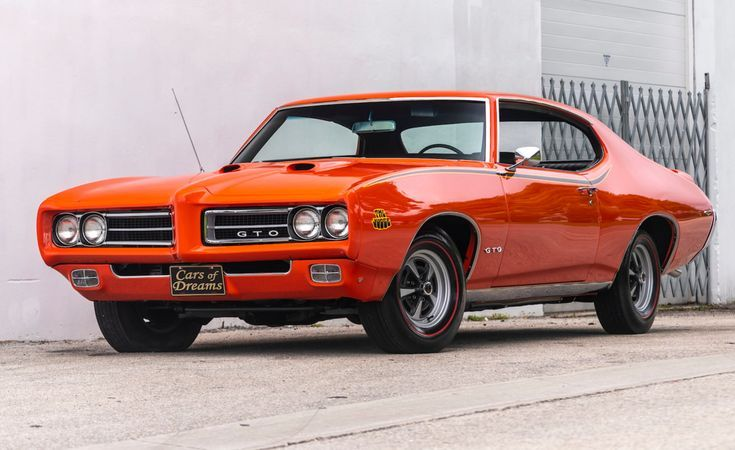
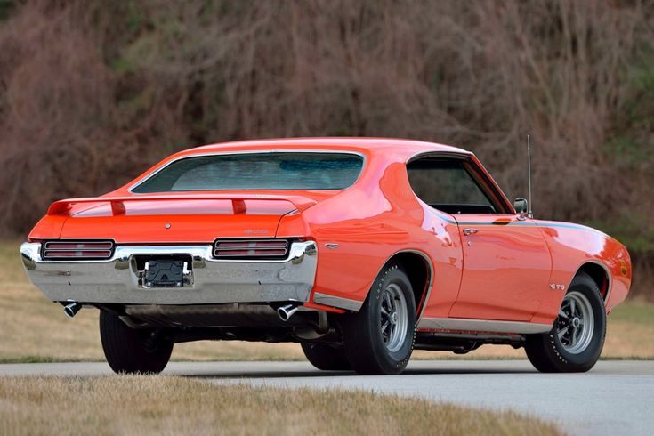
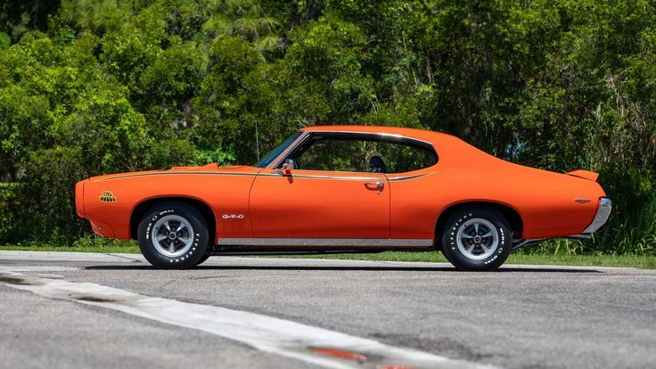

Pontiac GTO Judge 1971
Muscle Car




Detalles de la Restauración
Este Pontiac GTO Judge 1971 llegó a nuestro taller buscando recuperar su estatus de ícono del muscle car.
El cliente deseaba una restauración meticulosa que honrara la exclusividad del "Judge".
Al tiempo que incorporara mejoras de rendimiento y detalles de lujo sutiles para el disfrute moderno.
Trabajos realizados:
- Restauración completa del motor V8 original 455 HO (7.5L), optimizado para producir unos robustos 400 HP y un par motor impresionante, manteniendo la autenticidad.
- Sustitución completa del sistema de escape por uno de doble salida con resonadores de alto rendimiento, que emite el inconfundible y poderoso rugido del GTO Judge.
- Pintura original "Orbit Orange" con un acabado brillante de espejo y una protección cerámica avanzada para una durabilidad y un resplandor excepcionales.
- Restauración de todos los cromados y emblemas originales, incluyendo los gráficos distintivos de "The Judge" y las tomas de aire Ram Air en el capó.
- Reconstrucción completa del interior con vinilo y tela originales en color negro, replicando fielmente el patrón y la textura de fábrica, con una atención impecable a los detalles.
- Instalación de un sistema de audio moderno de alta fidelidad con componentes ocultos, que permite disfrutar de la música actual sin alterar la estética clásica del tablero.
- Actualización del sistema de frenos a discos perforados en las cuatro ruedas con pinzas de alto rendimiento, mejorando drásticamente la capacidad de frenado.
- Suspensión deportiva con barras estabilizadoras reforzadas y amortiguadores ajustables, proporcionando un manejo más preciso y una experiencia de conducción más cómoda.
Especificaciones técnicas
| Motor: | V8 455 HO (7.5L) restaurado y afinado |
| Potencia: | 400 HP @ 4,800 RPM |
| Transmisión: | Manual de 4 velocidades (Muncie M22 "Rock Crusher", original restaurada y reforzada) |
| Aceleración 0-100 km/h: | 5.5 segundos |
| Peso: | 1,720 kg |
| Carrocería: | Acero original restaurado |
| Color original: | Orbit Orange (código 65) |
| Interior: | Vinilo y tela negros con detalles en símil madera |